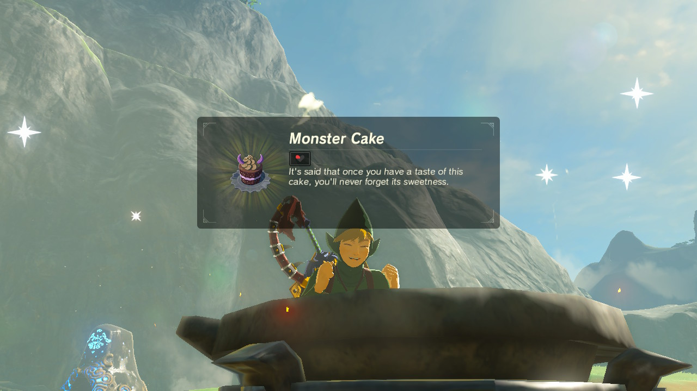
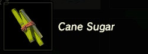
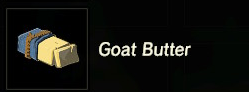

Monster Cake

This is one of my favorite dishes of Breath of the Wild.
Some say that once you have a taste of this cake you'll never forget it's sweetness.
And some others say that it's a dangerous dish that will make your head fuzzy and and may even motivate you to plan evil schemes!
If you wish to know more about this elegant dish, try to ask the NPC Gotter or consult the Castle Library Book found in the game.
Ingredients
- Tabantha Wheat, Cane Sugar and Goat Butter. All three can be purchased at your favorite local Rito village store.



- One monster extract. This one can be purchased
illegally legally by your favorite and only monster items dealer, Kilton.

- Optionally, you can try to add a couple more items to the recipe and see if it gives you some special side effects. Depending on the item you add, it will give you a different side effect.
Let's see where or how did Link get these items.
Ingredients Instructions
- Get your tabantha wheat ready and throw it in the pot.
- Once your tabantha wheat gets a floury texture, throw in a room temperature stick of goat butter.
- Stir the pot with some cane sugar until you get a nice and thick dough. Discard the cane sugar after getting the texture desired.
- Lastly grab a bottle of monster extract and carefully, add two drops of the extract. If we add more than two drops, the cake will end up being too sweet!
- Cover the pot with a lid, and bake at 350 fahrenheit degrees for about 30 seconds and serve.
Home Page